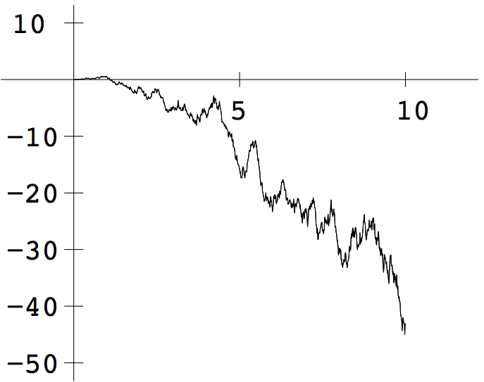
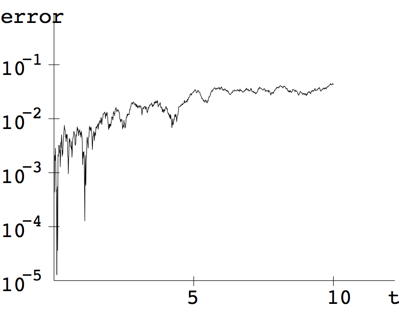
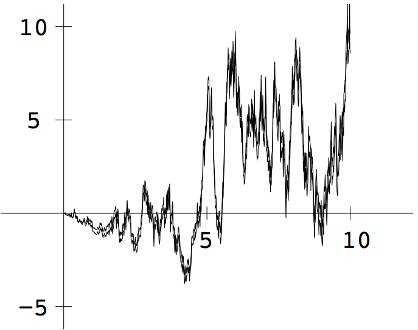
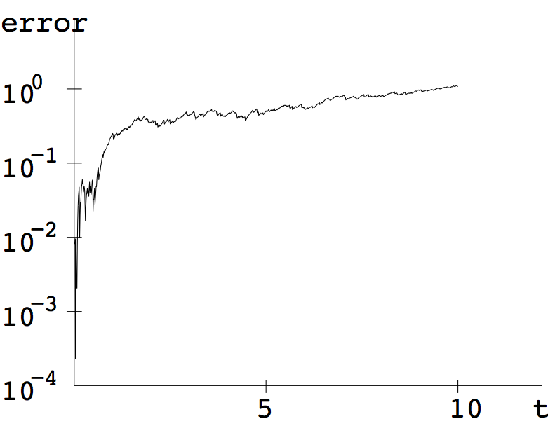
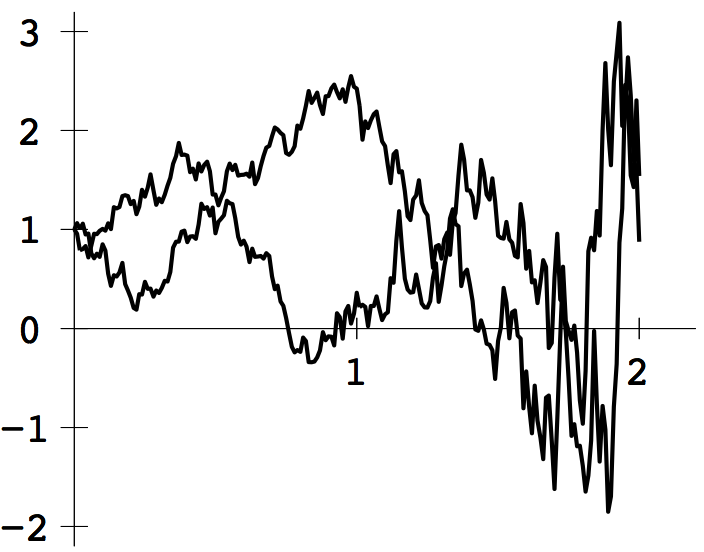
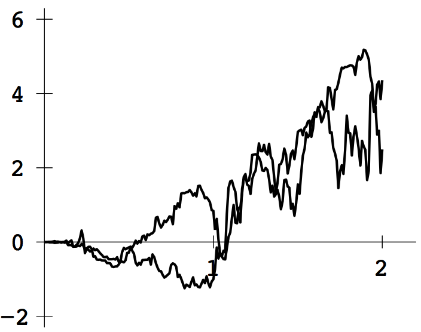
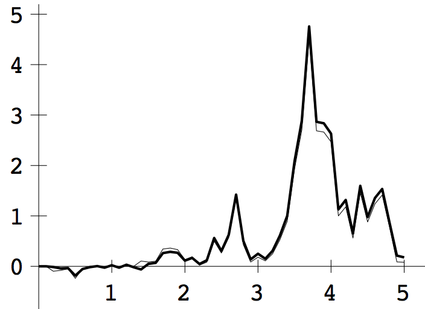
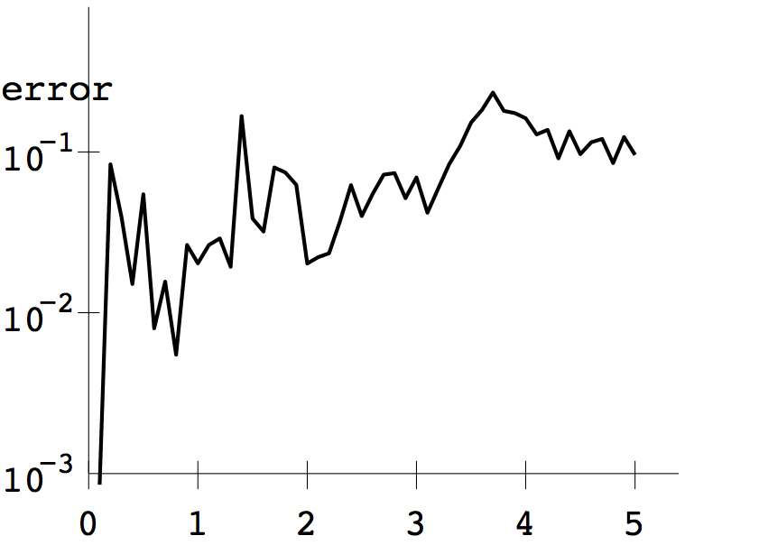
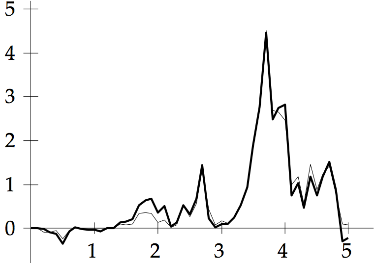
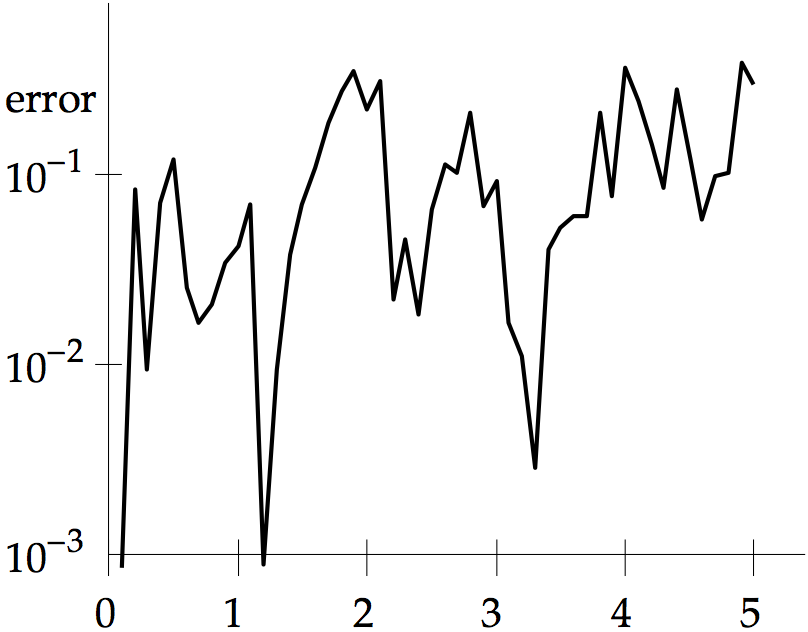

COMPUTER PROBLEMS 9.4
\(\def\ds{\displaystyle} \)
1 (a) We apply the Euler-Maruyama Method
to the initial value problem in Exercise 1(a). At time \(t_{i+1}\),
we use a Brownian motion realization to generate the new
approximation \(w_{i+1}\) along with the correct solution
\(u_{i+1} = t_{i+1}B_{t_{i+1}}\) for that Brownian motion realization.
Both are plotted below - they are too close to be distinguished at this
resolution. The other graph shows the
difference \(|u-w|\), plotted on a semilog scale.


1 (b) Similar to (a). The Euler-Maruyama Method is applied
to the initial value problem in Exercise 1(b). At time \(t_{i+1}\),
the new approximation \(w_{i+1}\) is plotted along with the correct solution
\(u_{i+1} = B_{t_{i+1}}^2-t_{i+1}\) for the same Brownian motion realization.


3 (a) Applying the Euler-Maruyama Method to the stochastic
differential equation in Exercise 3(a), with initial condition
\(y(0)=1\), results in the two realizations in the plot.

3 (b) Similar to (a), Euler-Maruyama applied to Exercise 3(b).
Two realizations are shown in the plot.

5 The Euler-Maruyama Method is applied to the stochastic
differential equation. The error at \(t=1\) is averaged over 5000
realizations for each step size \(h=10^{-1}, 10^{-2}\) and
\(10^{-3}\). Typical results:
\begin{array}{cc}
n&\text{avg. error}\\
10^{-1}& 0.2657\\
10^{-2}& 0.0925\\
10^{-3}& 0.0256\\
\end{array}
The results show approximate order \(1/2\).
7 The Milstein Method applied to the SDE \(dy=B_t\ dt+
9^{1/3}y^{2/3}\ dB_t\) is
\begin{eqnarray*}
w_{i+1}&=&w_i+B_i(\Delta t_i)+9^{1/3}w_i^{2/3}(\Delta B_i)
+\frac{1}{2}9^{1/3}w_i^{2/3}9^{1/3}\frac{2}{3}w_i^{-1/3}((\Delta B_i)^2-\Delta t_i)\\
&=&w_i+B_i(\Delta t_i)+9^{1/3}w_i^{2/3}(\Delta B_i)
+3^{1/3}w_i^{1/3}((\Delta B_i)^2-\Delta t_i).
\end{eqnarray*}
An approximate realization with step size \(h=0.1\) is shown below (thick curve)
along with the exact realization using the same Brownian
motion path. Also, the difference between the approximate and exact
solutions is plotted.


9
The Runge-Kutta Method applied to the SDE \(dy=B_t\ dt+
9^{1/3}y^{2/3}\ dB_t\) is
\begin{eqnarray*}
w_{i+1}&=&w_i+B_i(\Delta t_i)+9^{1/3}w_i^{2/3}(\Delta B_i)\\
&+&\frac{1}{2\sqrt{\Delta t_i}}\left[9^{1/3}((w_i+9^{1/3}w_i^{2/3})\sqrt{\Delta t_i})^{2/3}-9^{1/3}w_i^{2/3}\right]
\left[(\Delta B_i)^2-\Delta t_i\right].
\end{eqnarray*}
In the left figure, an approximate realization with step size \(h=0.1\) is shown (thick curve)
along with the exact realization using the same Brownian
motion path. The difference between the approximate and exact
solutions is plotted in the right figure.


11 Similar to Computer Problem 5, but using the Milstein
Method. Typical results are shown in the table:
\begin{array}{cc}
n&\text{avg. error}\\
10^{-1}& 0.1394\\
10^{-2}& 0.0202\\
10^{-3}& 0.0026\\
\end{array}
The results show approximate order \(1\).